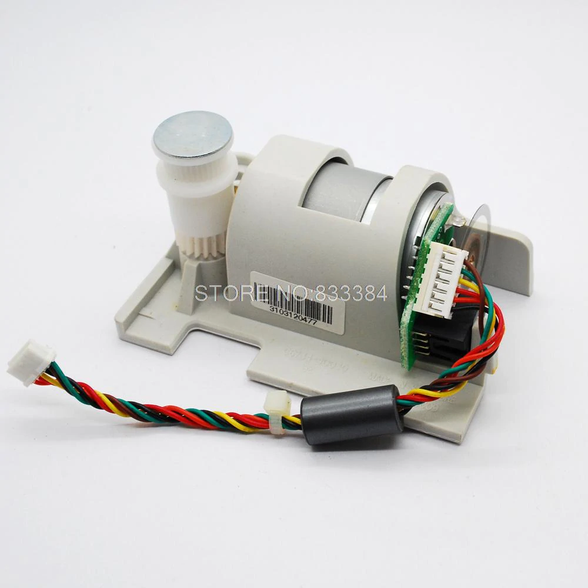
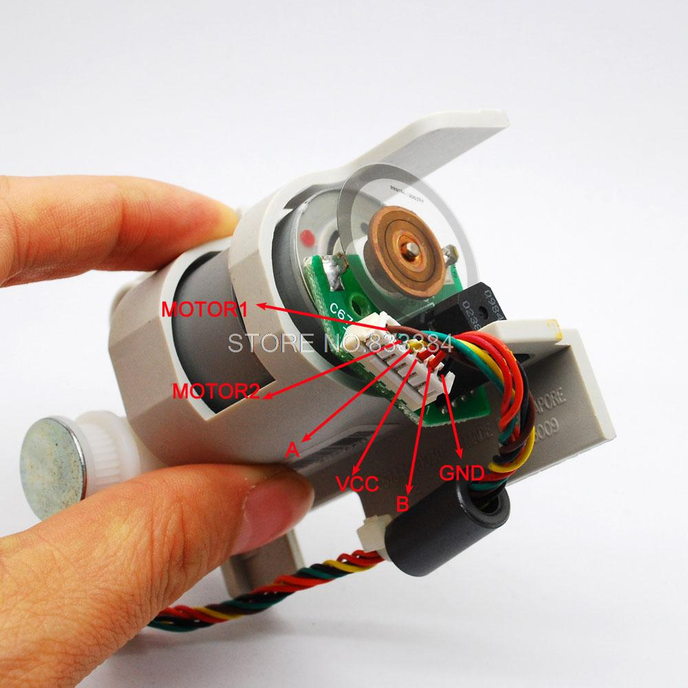
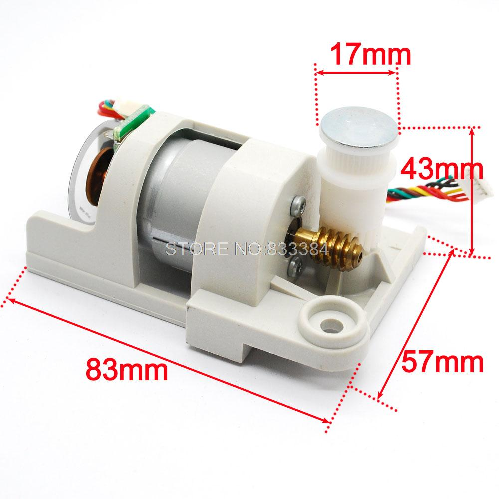
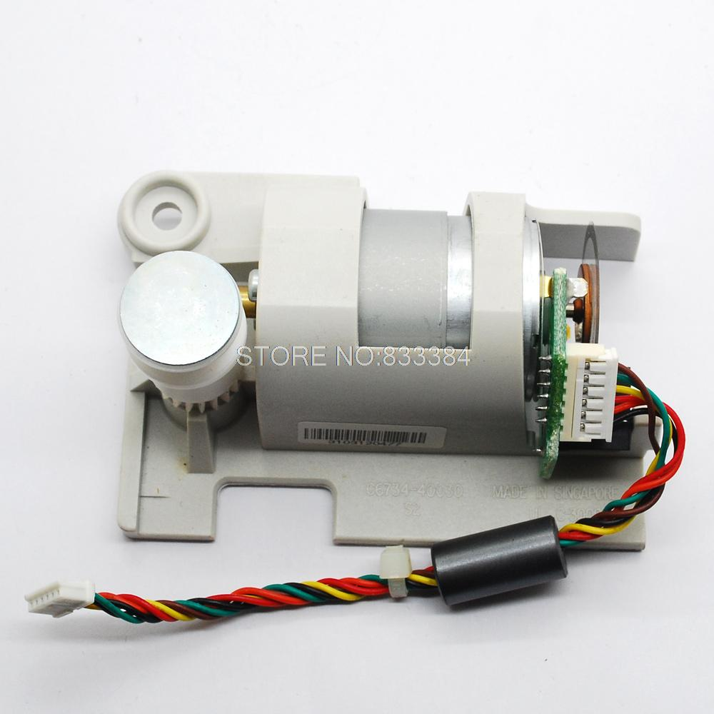
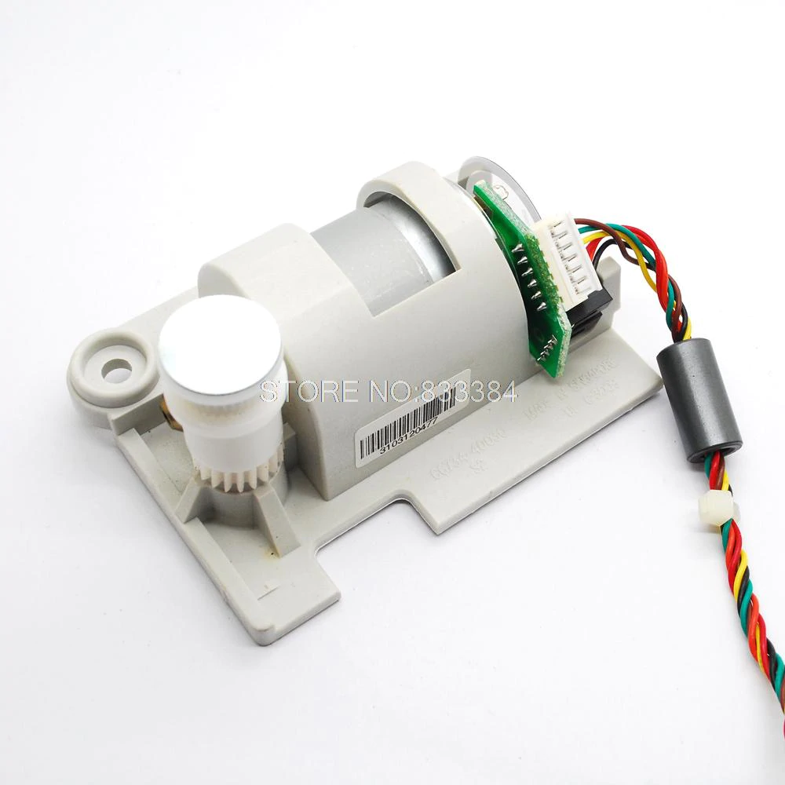

spannungsbelastung aktuelle Geschwindigkeit
3v 60ma 70 rpm
6v 70mA 140 rpm
12v 80mA 180 rpm
Pls Bekanntmachung: don' t haben mehr Daten zu diesem Artikel
Beschreibung:
Betriebsspannung von 5v bis 24v.
Die motorwicklung Widerstand ist 6,6 Ohm,
Widerstand Strom = Spannung/Widerstand.
Untersetzung kam 20:1
Neu
mit 888 linie ab der Encoder dc Motor + wurm druckminderer, der
ursprüngliche Entwurf ist das HP scanner antriebsmotor Komponenten. Die
Genauigkeit 888 Linie für mehr als eine Vielzahl von professionellen
encoder. Kann zur Entwicklung die Mikro servomotor, Abschluss Design(
servomotor Controller), Advanced intelligentes fahrzeug, miniatur gravur
maschinenantrieb, etc.
Gesamtleistung
zwei Zeilen orthogonale( Phasendifferenz von 90 u. Grad; puls Signal).
Entschließung 888 bedeutet, dass jedem elektrischen impulsausgang zu
drehen 888 Zyklus. Wenn jeder unter Impuls auf und den ganzen Weg
entlang, entspricht viermal die Frequenz, Auflösung erreichen 888* 4 =
3552
Encoder wenn
3,5 v gemessen 20 mA( gemessen 3,3 V bis 5 v ist normale Arbeit, die
Rechtecksignal spezifikation, aber mit der Zunahme des Spannung
Arbeitsstrom erhöhen, 5 V bei der Arbeit aktuellen 40 ma), plus
elektrische encoder nach Einbruch der Dunkelheit Rotlicht( niedrigen
Intensität), ab phasigen ausgang wissen die Drehrichtung der Maschine.





Paket enthalten: